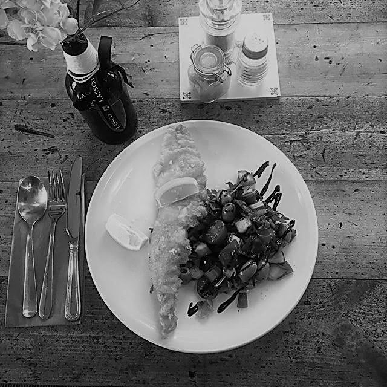

Jazz Alchemy
Saturday 11th November 2017
A night for relaxation, fun and friendship, with music by the Dancing Souls, cocktails by Henry, and seasonal food by Lassco 3Pigeons.
Dancing Souls

Dancing Souls are a new outfit, passionate about funky, groovy music, featuring Emlyn Jones on saxophone and Josh Siler on piano.
Their performances are based on improvisation, influenced by both the Jazz greats, and disco and funk bands. No two performances are ever the same.
Henry
Henry is a young entrepreneur and founder of new bar business, Symposium. From cutting his (bartending) teeth in Leeds, he's worked his way up to managing a busy city-centre cocktail bar, before relocating to Towcester as bar manager for the award winning pub, 185.
Now in the process of setting up his own event business, specialising in cocktails, Henry is delighted to be focusing on his favourite part of the bar industry.
Favourite cocktail? An aged rum daiquiri shaken with a few mint leaves.
Cocktail claim to fame? Working with Merlin ('First Dates' barman and mixologist) in his Northamptonshire pub!
Lassco 3Pigeons
A quirky coaching inn with an all fresh kitchen on the London – Oxford turnpike, Lassco 3 Pigeons source food from local farms, wild food suppliers and their onsite vegetable and herb garden.
Evening menus utilise ingredients at their very best, creating seasonal, simple food. With bar means starting from £12.50 and a two-course menu from £18.00, there is something for everyone.
Tickets
All tickets are now sold. There are no tickets available on the door.
Please keep in touch and we look forward to seeing you at our next event!